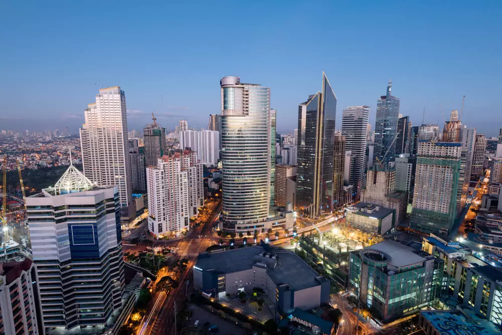

Philippines, also known as the Republic of Philippines, is the largest archipelago in the world, comprising 7641
islands! The country is famous for its abundant picturesque and sun-kissed beaches. A lesser known fact is that
it is
home to a wide variety of exotic fruits viz mangosteen, papaya, and banana.
Here In the Philippines, there are about 76 to 78 major language groups, with more than 500 dialects. That was
because
our country was conquered by the Spanish and later on the American.
We are known as most hospitable, and we are appreciated by many people for doing good things to others even
though they
do not know each other or just strangers.
Another great thing to know about filipino culture is that every filipino loves to celebrate any
occasion. May it be
simple like graduation, birthday, Job promotion, and more. Many filipino here in the Philippine culture and
tradition
have been known worldwide and is one of the main reasons foreigners love spending the holidays in the country.
That's
why there are a lot of foreigners who love to come back here and to join us to celebrate some of the biggest
events here
in the Philippines.
The Philippines is an archipelago in Southeast Asia. The archipelago is located in the Philippine Sea between the South China Sea and the Pacific Ocean.There are 7,107 islands in the Philippines but only about 2,000 of them are inhabited. The country has a coastline of
36,289 km/ 22,548 miles and does not have land borders.
The capital city of the Philippines is Manila. One of the ten largest island countries in the world is slightly larger than the state of Arizona/USA or about the size
of Italy.

Did you know the culturally rich Philippines has over 100 Fiestas (Festivals) annually? Each city or province has a local fiesta. Being a very religious centered country, a fiesta is usually about the celebration of that city or province patron saint. While “fiesta season” spans throughout the year, it is safe to say that there is at least one major festival happening throughout the country at any given week. With majority of those festivals originating from pre-colonial traditions in local cities and communities or rooted in Christianity from the Spanish Colonial Era.